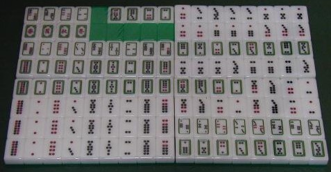

「控花（ワホア）」と読む。しかし実はここに書いた「控」という字は間違っている。正しくは、つくりが「空」ではなく、「穴冠に乙」と書く。しかしPC辞書にそんな字は無い。
※手偏につくりが「穴冠に乙」という字は、「扼」の異体字。「扼」は「占める」というような意味の字で、「扼要（要所を占める）」などと使われる。だったら「控」なんて字は使わないで、「扼花牌」とすればいいようなもの。しかし「扼」は「扼殺（絞め殺す）」というときにも使われる。どうも印象がよくないので、「控」で代用させた。(-_-)
見たとおり、この控花牌は麻雀の筒子にそっくり。それもその筈、この控花牌のルーツは、麻雀と同じ天九牌（てんきゅうハイ）。すなわち天九牌（32枚）のデュプリケーションタイプ（複牌化）が、この控花牌。
※となれば本当は天九牌から紹介すべきなのであろうが、なにげなしにこっちから始めてしまった。m(_
_)m
もともと天九牌は、サイコロの目を写し取ってカードゲームとしたもの。それがある時期、駒札化して32駒のゲームとなった。その天九牌が紙札麻雀と融合して、今日の麻雀牌となったというのが現在の定説。
紙札麻雀にも現在の筒子にあたる文子（ウエンツ）があった。この文子は、文銭を形どったものなので、一目で銭と分かるデザイン（一文（イーウエン）は、１文銭が１枚描かれていた）。ところが紙札麻雀と天九牌が融合する過程で、筒子は天九牌のデザインが採用された。そこで麻雀の筒子デザインは、天九牌と酷似している。
※「筒子」は中国語では「トンツ」と発音する。そこで日本でも「イートン/リャントン」と発音する人もいる。しかし日本では「ピンヅ」、そして「イーピン/リャンピン」と発音されることが多い。これは中国における筒子のもう一つの通称「餅子（ピンツ）」から来ている。すなわち日本では、表記は「筒子」が用いられ、発音は「ピンツ」が普及したもの。
控花牌は総数126枚のゲーム（ここには130枚あるが、上から２段目、左から４枚は番外牌。また裏返しになっている６枚は予備牌）。詳しい遊び方は長くなるので勘弁してもらうとして、日本へは大正１３年６月、「控花競技法（中村徳三郎・千山閣）」によって紹介された。この「控花競技法」のサブタイトルには「麻雀以上、超麻雀！」とある。それほど面白いという触れ込みであったが、残念ながら日本ではまったく普及しなかった。そして現在、中国でもあまり普及していないと聞く。
※普及しなかったので、「控花」の本はこれ以外に発行されなかったし、「控花競技法」という本も売れなかった。ということは.....いま、「控花競技法」はレア本なのだ。古書店で見かけたら、モノも云わずにゲットしよう。
＃新書版より少し大きいサイズで、表紙は赤色と青色がある。どっちでもレアだが、青表紙が特にレア。
|